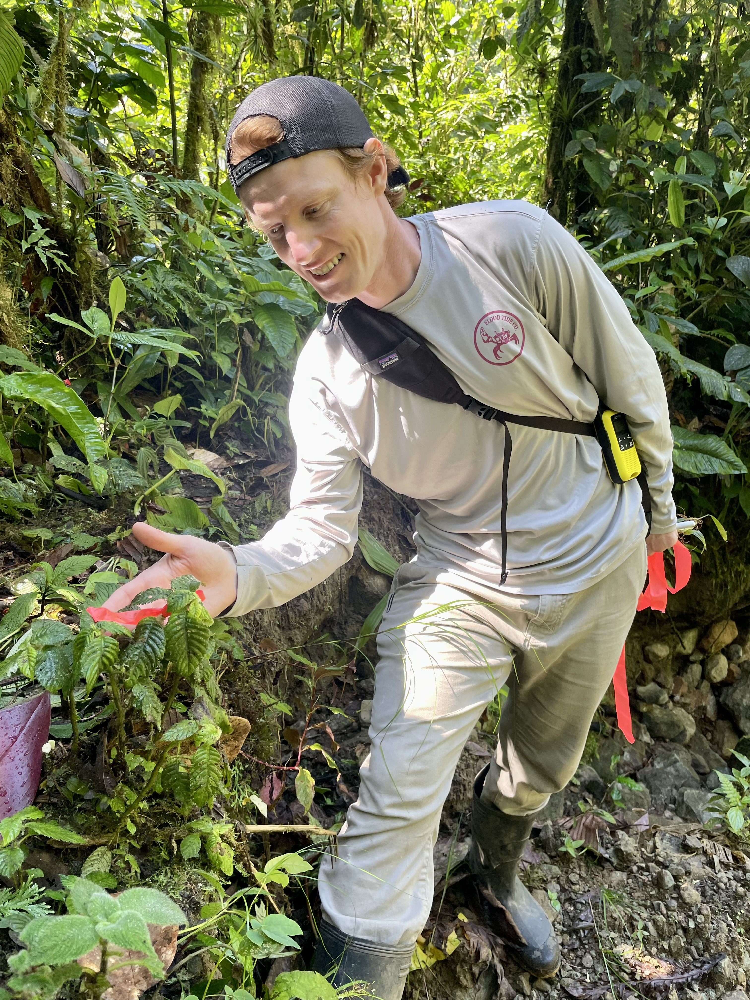
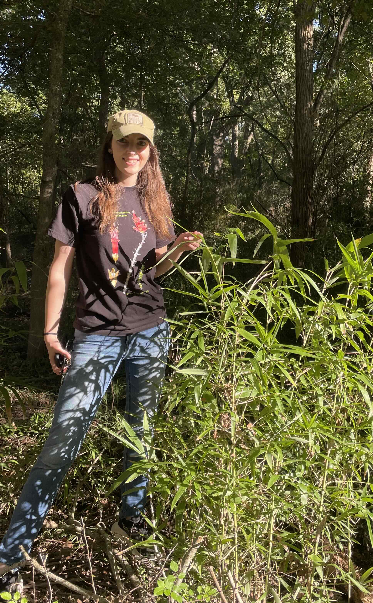

Our lab brings together students and researchers working across field botany, biological collections, genomics, phenomics, and conservation.

Growing up in the San Juan mountains of southwestern Colorado, Dawson developed an early interest in biology and the environment. His path in botany was formed through via experiences conducting vegetation inventories in the Peruvian Amazon and Andean premontane forests, where he came to appreciate how much remains to be discovered and understood about the world's plant diversity and its roles in ecosystem function. Today, his research is grounded in the field, herbarium, and laboratory, where he and specializes in phylogenetic systematics, floristics, genomics, spectral phenomics, and conservation biology. Outside of work, Dawson enjoys family life with his wife and two kids, fly-fishing, skiing and snowboarding, and playing soccer and hockey.

Elizabeth is a botanist specializing in agrostology (the study of grasses). Her field, laboratory, and herbarium research integrates taxonomy, phylogenomics, morphology, and functional traits to characterize grass diversity and understand the evolution of species associated with distinct habitats. She earned her Ph.D. from Iowa State University, studying the systematics and fire-associated traits of Neotropical bamboos, particularly the Guadua paniculata species complex. Her previous research also includes floristic inventories and plant community analyses in the Blue Ridge Mountains of Virginia. At Texas A&M, she is working to resolve taxonomic problems and understand how Texas and North American grasses have diversified and adapted to their environments, providing botanical knowledge relevant to land management and environmental change.
Divya is a first-year M.S. Data Science student at Texas A&M University with a background in Electrical and Electronics Engineering. She is interested in machine learning and the integration of images and other data types to identify plant traits and species from herbarium specimens. She brings a data science perspective to botanical research and is eager to learn from collaborations with botanists.
Kyle, originally from Anna, Texas, earned his Ph.D. in Ecology and Evolutionary Biology from Texas A&M University, where he studied the phylogenetics and ecology of Leavenworthia, a genus of rare plants in the Brassicaceae. He now serves as Collections Manager of the S.M. Tracy Herbarium and contributes to the documentation, understanding, and stewardship of the Texas flora.
Prospective students interested in plant systematics, herbarium science, and conservation are encouraged to read the Join page.
Beginning in Fall 2026, undergraduate students can participate in field, herbarium, spectral, and data-centered research projects.
Interested in joining our lab or working with the TAES/TAMU Herbarium? Visit our Join page to learn about opportunities.